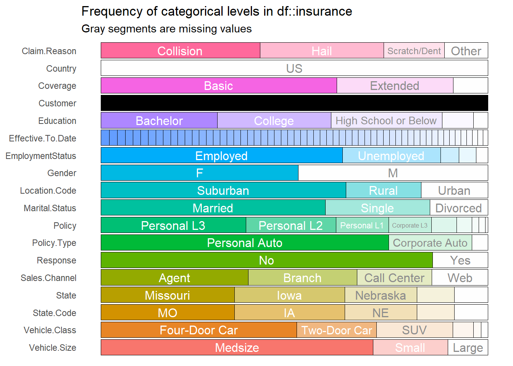

Chapter 5 Insurance
5.1 Prediction of Total Claim Amount
5.1.1 Background
Seiring tingkat kompetisi yang semakin tinggi di industri asuransi, perusahaan dituntut untuk selalu memberikan terobosan dan strategi untuk memberikan layanan yang terbaik untuk nasabahnya. Salah satu aset utama perusahaan asuransi tentunya adalah data nasabah dan riwayat polis. Tentunya dengan adanya data yang dimiliki oleh perusahaan, dapat dimanfaatkan dalam upaya pengambilan keputusan strategis.
Perusahaan memiliki kebutuhan untuk memperhitungkan pembayaran klaim di masa depan. Tanggung jawab tersebut biasa dikenal sebagai cadangan klaim. Karena cadangkan klaim adalah kewajiban yang harus dipersiapkan untuk masa yang akan datang, nilai pastinya tidak diketahui dan harus diperkirakan.
Risiko yang dimiliki oleh setiap nasabah tentunya bervariasi, faktor-faktor yang berhubungan dengan risiko tentunya membantu dalam memprediksi biaya klaim yang harus dibayarkan. Tujuan dari analysis ini adalah untuk memprediksi besarnya klaim yang harus diberikan oleh perusahaan untuk setiap nasabahnya, hasil prediksi diperoleh dengan mempelajari karakteristik dan profil dari nasabah tersebut.
5.1.2 Modelling Analysis
5.1.2.1 Import Data
Data yang digunakan merupakan profil data nasabah asuransi kendaraan beserta total claim dari masing-masing nasabah yang diperoleh dari link berikut. Data tersebut berisikan 9134 observasi atau sebanyak jumlah nasabah yang dimiliki, beserta 26 kolom. Target variabel pada data ini adalah Total.Claim.Amount, kita akan memprediksi total claim amount untuk setiap nasabah, harapannya perusahaan asuransi dapat mengetahui dana yang harus disiapkan untuk membayar klaim.
#> Customer Country State.Code State Claim.Amount Response
#> 1 BU79786 US KS Kansas 276.3519 No
#> 2 QZ44356 US NE Nebraska 697.9536 No
#> 3 AI49188 US OK Oklahoma 1288.7432 No
#> 4 WW63253 US MO Missouri 764.5862 No
#> 5 HB64268 US KS Kansas 281.3693 No
#> 6 OC83172 US IA Iowa 825.6298 Yes
#> Coverage Education Effective.To.Date EmploymentStatus Gender
#> 1 Basic Bachelor 2/24/11 Employed F
#> 2 Extended Bachelor 1/31/11 Unemployed F
#> 3 Premium Bachelor 2/19/11 Employed F
#> 4 Basic Bachelor 1/20/11 Unemployed M
#> 5 Basic Bachelor 2/3/11 Employed M
#> 6 Basic Bachelor 1/25/11 Employed F
#> Income Location.Code Marital.Status Monthly.Premium.Auto
#> 1 56274 Suburban Married 69
#> 2 0 Suburban Single 94
#> 3 48767 Suburban Married 108
#> 4 0 Suburban Married 106
#> 5 43836 Rural Single 73
#> 6 62902 Rural Married 69
#> Months.Since.Last.Claim Months.Since.Policy.Inception
#> 1 32 5
#> 2 13 42
#> 3 18 38
#> 4 18 65
#> 5 12 44
#> 6 14 94
#> Number.of.Open.Complaints Number.of.Policies Policy.Type
#> 1 0 1 Corporate Auto
#> 2 0 8 Personal Auto
#> 3 0 2 Personal Auto
#> 4 0 7 Corporate Auto
#> 5 0 1 Personal Auto
#> 6 0 2 Personal Auto
#> Policy Claim.Reason Sales.Channel Total.Claim.Amount
#> 1 Corporate L3 Collision Agent 384.8111
#> 2 Personal L3 Scratch/Dent Agent 1131.4649
#> 3 Personal L3 Collision Agent 566.4722
#> 4 Corporate L2 Collision Call Center 529.8813
#> 5 Personal L1 Collision Agent 138.1309
#> 6 Personal L3 Hail Web 159.3830
#> Vehicle.Class Vehicle.Size
#> 1 Two-Door Car Medsize
#> 2 Four-Door Car Medsize
#> 3 Two-Door Car Medsize
#> 4 SUV Medsize
#> 5 Four-Door Car Medsize
#> 6 Two-Door Car Medsize5.1.2.2 Exploratory Data
Selanjutnya melihat structure data dari masing-masing variabel, jika terdapat variabel yang belum sesuai tipe datanya perlu dilakukan explicit coercion.
#> 'data.frame': 9134 obs. of 26 variables:
#> $ Customer : Factor w/ 9134 levels "AA10041","AA11235",..: 601 5947 97 8017 2489 4948 8434 756 1352 548 ...
#> $ Country : Factor w/ 1 level "US": 1 1 1 1 1 1 1 1 1 1 ...
#> $ State.Code : Factor w/ 5 levels "IA","KS","MO",..: 2 4 5 3 2 1 1 4 1 1 ...
#> $ State : Factor w/ 5 levels "Iowa","Kansas",..: 2 4 5 3 2 1 1 4 1 1 ...
#> $ Claim.Amount : num 276 698 1289 765 281 ...
#> $ Response : Factor w/ 2 levels "No","Yes": 1 1 1 1 1 2 2 1 2 1 ...
#> $ Coverage : Factor w/ 3 levels "Basic","Extended",..: 1 2 3 1 1 1 1 3 1 2 ...
#> $ Education : Factor w/ 5 levels "Bachelor","College",..: 1 1 1 1 1 1 2 5 1 2 ...
#> $ Effective.To.Date : Factor w/ 59 levels "1/1/11","1/10/11",..: 48 25 42 13 53 18 48 10 19 40 ...
#> $ EmploymentStatus : Factor w/ 5 levels "Disabled","Employed",..: 2 5 2 5 2 2 2 5 3 2 ...
#> $ Gender : Factor w/ 2 levels "F","M": 1 1 1 2 2 1 1 2 2 1 ...
#> $ Income : int 56274 0 48767 0 43836 62902 55350 0 14072 28812 ...
#> $ Location.Code : Factor w/ 3 levels "Rural","Suburban",..: 2 2 2 2 1 1 2 3 2 3 ...
#> $ Marital.Status : Factor w/ 3 levels "Divorced","Married",..: 2 3 2 2 3 2 2 3 1 2 ...
#> $ Monthly.Premium.Auto : int 69 94 108 106 73 69 67 101 71 93 ...
#> $ Months.Since.Last.Claim : int 32 13 18 18 12 14 0 0 13 17 ...
#> $ Months.Since.Policy.Inception: int 5 42 38 65 44 94 13 68 3 7 ...
#> $ Number.of.Open.Complaints : int 0 0 0 0 0 0 0 0 0 0 ...
#> $ Number.of.Policies : int 1 8 2 7 1 2 9 4 2 8 ...
#> $ Policy.Type : Factor w/ 3 levels "Corporate Auto",..: 1 2 2 1 2 2 1 1 1 3 ...
#> $ Policy : Factor w/ 9 levels "Corporate L1",..: 3 6 6 2 4 6 3 3 3 8 ...
#> $ Claim.Reason : Factor w/ 4 levels "Collision","Hail",..: 1 4 1 1 1 2 1 1 1 2 ...
#> $ Sales.Channel : Factor w/ 4 levels "Agent","Branch",..: 1 1 1 3 1 4 1 1 1 2 ...
#> $ Total.Claim.Amount : num 385 1131 566 530 138 ...
#> $ Vehicle.Class : Factor w/ 6 levels "Four-Door Car",..: 6 1 6 5 1 6 1 1 1 1 ...
#> $ Vehicle.Size : Factor w/ 3 levels "Large","Medsize",..: 2 2 2 2 2 2 2 2 2 2 ...Berikutnya kita perlu inspect persebaran data yang dimilih baik data kategorik dan numerik, kita dapat menggunakan package inspectdf untuk eksplorasi berikut ini.

Dari hasil kedua plot diatas berikutnya membuang variabel yang tidak dibutuhkan dalam model. Variabel customer merupakan data unique dari ID setiap customer, oleh karena itu kita akan membuang variabel tersebut. Variabel country tidak banyak memberikan informasi, karena semua observasi berisikan informasi yang sama. Variabel State.Code juga memberikan informasi yang sama dengan variabel State, oleh karena itu kita akan menggunakan salah satu dari kedua variabel tersebut yaitu variabel State. Sedangkan untuk variabel Policy kita hilangkan karena informasi yang diberikan juga sama dengan variabel Policy.Type.
Selanjutnya, split data menjadi data train dan data test dengan proporsi 80:20.
5.1.2.3 Modelling
Kemudian bentuk model random forest, tentukan target variabel dan prediktor yang digunakan.
library(randomForest)
forest_claim <- randomForest(Total.Claim.Amount~.,data = claim_train, localImp = TRUE)
#saveRDS(forest_claim,"forest_claim.RDS")#>
#> Call:
#> randomForest(formula = Total.Claim.Amount ~ ., data = claim_train, localImp = TRUE)
#> Type of random forest: regression
#> Number of trees: 500
#> No. of variables tried at each split: 6
#>
#> Mean of squared residuals: 12764.93
#> % Var explained: 84.8Model memiliki kemampuan menjelaskan variasi data sebesar 84.8%, sedangkan sisanya sebesar 15.2% dijelaskan oleh variabel lain yang tidak digunakan pada model. Untuk mengetahui variabel yang paling berpengaruh pada model, kita dapat melihat variabel importance.
Nilai importance atau tingkat kepentingannya terdapat dua penilaian yaitu IncMSE dan IncNodePurity. Untuk IncMSE diperoleh dari error pada OOB (out of bag) data, kemudian di rata-ratakan untuk semua pohon, dan dinormalisasi dengan standar deviasi. Untuk IncNodePurity merupakan total penurunan impurity dari masing-masing variabel. Untuk kasus klasifikasi node impurity diperoleh dari nilai gini index, sedangkan untuk kasus regresi diperoleh dari SSE (Sum Square Error).
Untuk mengetahui peran variabel dalam pembuatan model, kita dapat memanfaatkan package randomForestExplainer yang menyediakan beberapa function untuk memperoleh informasi mengenai variabel importance.
mindepth_frame <- min_depth_distribution(forest_claim)
#saveRDS(mindepth_frame, "mindepthframe.rds")mindepth_frame <- readRDS("assets/04-insurance/mindepthframe.rds")
plot_min_depth_distribution(mindepth_frame, mean_sample = "top_trees")Plot tersebut memberikan informasi mengenai nilai mean minimal dept untuk setiap variabel. Semakin kecil nilai minimal depth artinya semakin penting variabel tersebut pada model. Semakin besar proporsi minimal dept pada warna merah mudah (mendekati 0), artinya variabel tersebut sering dijadikan sebagai root node, yaitu variabel utama yang digunakan untuk menentukan nilai target.
imp_frame <- readRDS("assets/04-insurance/imp_frame.rds")
plot_multi_way_importance(imp_frame, size_measure = "no_of_nodes",no_of_labels = 6)
plot_multi_way_importance(imp_frame, x_measure = "mse_increase",
size_measure = "p_value", no_of_labels = 6)
Perbandingan dari ketiga plot, terdapat 5 variabel yaitu location code, monthly premium auto, vehicle class, income, dan claim amount yang selalu muncul dari ketiga plot tersebut. Artinya kelima variabel tersebut dapat dikatakan variabel yang paling berpengaruh dan banyak digunakan dalam pembuatan pohon.
Berikutnya lakukan prediksi untuk data test, kemudian cari nilai error dari hasil prediksi
Mencari nilai RMSE (Root Mean Squared Error)
#> [1] 62.59351RMSE merupakan nilai rata rata dari jumlah kuadrat error yang menyatakan ukuran besarnya kesalahan yang dihasilkan oleh model. Nilai RMSE rendah menunjukkan bahwa variasi nilai yang dihasilkan oleh model mendekasi variasi nilai observasinya. Jika dilihat dari 5 number summary variabel total claim amount, nilai RMSE yang diperoleh sebesar 119.9 dapat dikatakan sudah cukup baik.
5.1.3 Conclusion
Untuk memprediksi nilai Total Claim Amount model ini memiliki kemampuan menjelaskan variasi data sebesar 84.8% dan variabel yang paling mempengaruhi target adalah variabel location code, monthly premium auto, vehicle class, income, dan claim amount. Hasil error yang diperoleh dari model tersebut cukup baik dalam memprediksi data.